大四老狗今年要上两门项目实践课，其中一门要用到Java，之前都是头铁用VSCode或者Eclipse编译Java环境的，这次要求用IDEA，于是记录一下学习过程（好耶！禁止好耶）
IDEA
1. IDEA简介
IDEA，全称 IntelliJ IDEA，是 Java 语言的集成开发环境，IDEA 在业界被公认为是最好的 java 开发工具之一，尤其 在智能代码助手、代码自动提示、重构、J2EE 支持、JUnit、CVS 整合、创新的 GUI 设计等方面的功能是非常牛逼 的。IDEA 几乎支持与 Java 开发有关的所有操作。
2. IDEA下载
IDEA分旗舰版（30天试用）和社区版（免费）。我这里下载的是旗舰版+破解。破解方式在下面会说明。
安装之前，建议电脑配置：内存最少4G以上，CPU i5以上，JDK1.8以上。
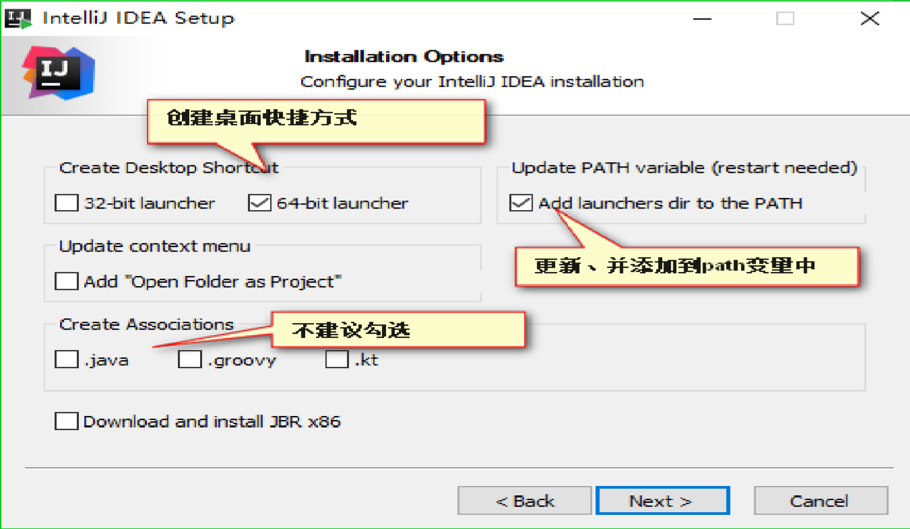
安装时勾选上图所示，其他的按默认配置就好。
3. 启动IDEA
双击桌面上的idea图标即可启动。
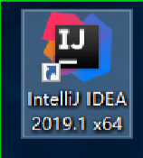
启动时，询问是否需要导入一些配置，可以选择不导入。
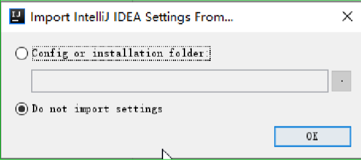
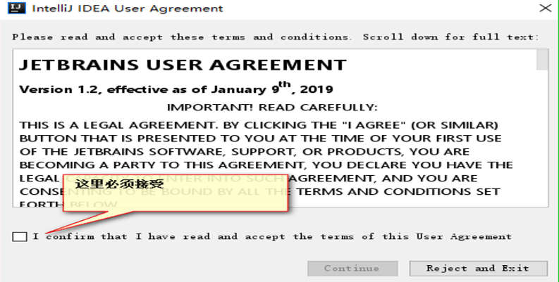
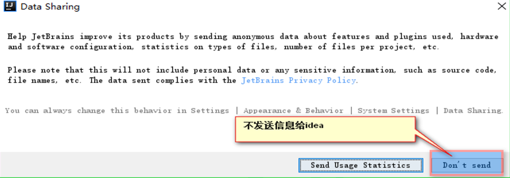
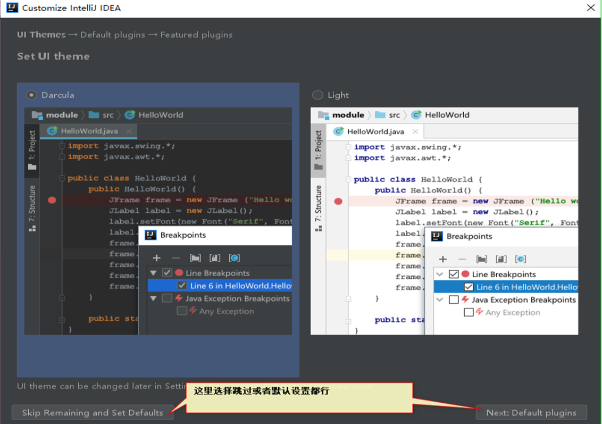
4. 激活IDEA
目前能破解的IDEA版本是2020.1（最新版我试了会卡住），破解方式参照了这篇文章点击此处。
5. 第一个程序Hello World
现在，就可以使用IDEA编写Java程序了！那么，第一个程序当然得是The World Hello World了！
创建Java项目。
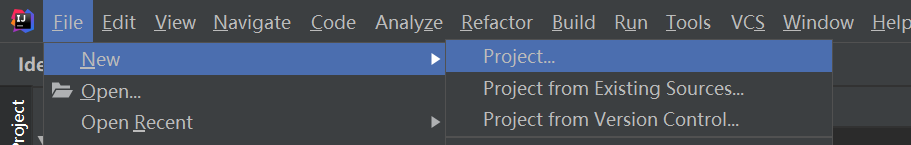
选择SDK。
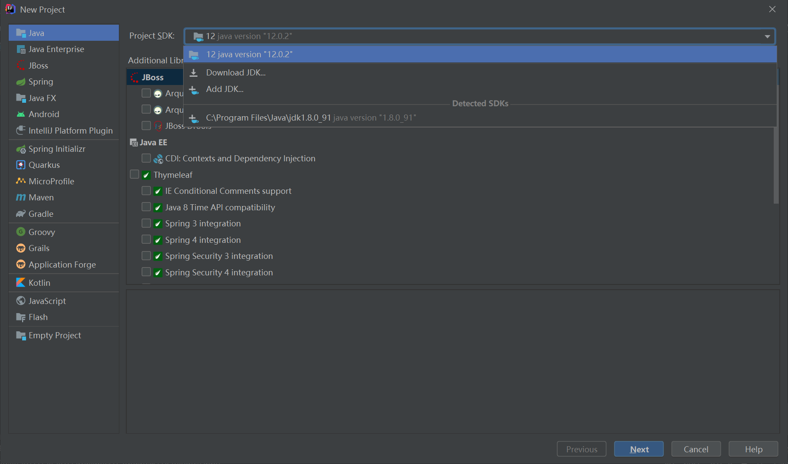
之后直接默认配置就好。
新建完项目后，选择src文件夹，右键new，选择Java class创建class。
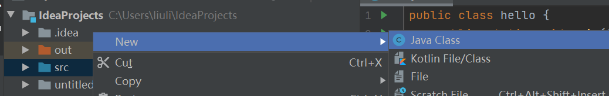
接着就可以编写测试程序了。
1 | public class hello { |
在程序空白处右键菜单，选择run运行。
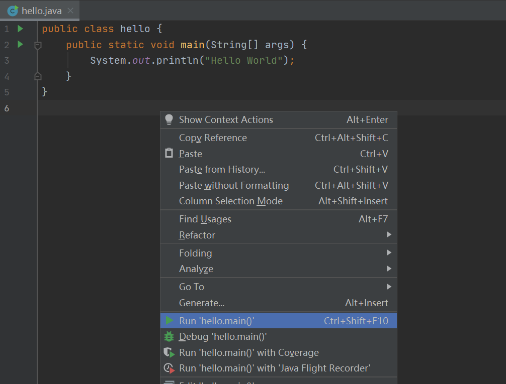
运行成功！
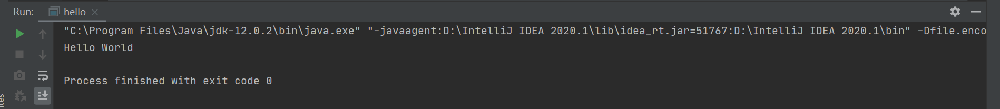
值得注意的是，使用IDEA写完代码，不用手动保存，IDEA会自动完成保存代码。
Maven
1. 你说的这个Maven，它到底是个什么？
Maven是一款服务于Java平台的自动化构建工具，它可以规范jar包的下载，并将jar包保存在‘仓库’中进行管理，项目需要该jar包的时候从仓库中引用即可，可以节省存储空间。另外，maven还可以自己处理jar包之间的依赖关系，只需要引入一个主jar包，依赖包会由maven自己引入。
所谓构建，是以java源文件、配置文件、jsp、html、图片等资源作为原材料去生产一个可以运行的项目的过程。构建的环节如下：
- 清理：将以前编译得到的旧的.class文件删除，为下一次的编译做准备
- 编译：将.java文件编译成.class文件
- 测试：自动测试，自动调用junit程序
- 报告：测试程序执行的结果
- 打包：java项目打jar包，web项目打war包
- 安装：Maven特定的概念—将打包得到的文件复制到“仓库”的指定位置
- 部署：web项目生成war包复制到Servlet容器的指定目录下，例如tomcat的webapps目录，使其可以运行
2. 好像有点懂了，那怎么才能搞到呢
下载和解压
Maven-3.6.3的下载地址。需要找一个非中文的非C盘目录解压。我这里解压在D盘。
下载Maven仓库
下载Maven仓库（里面有一些常用jar包），解压到非C盘非中文目录。我这里解压到D:\apache-maven-3.6.3\repository下。复制解压目录，下一步会用到。
修改Maven目录下的配置文件apache-maven-3.6.3\conf\settings.xml，将Maven默认的仓库目录改为我们刚刚复制的解压目录。
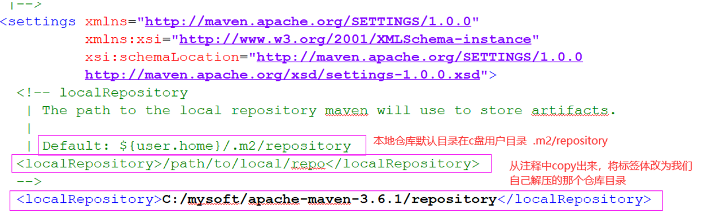
配置环境变量
1）检查JAVA_HOME环境变量
很久之前做的，这里就不赘述了（其实是不记得了）。
2）配置Maven环境变量。这个到系统环境变量配置里去添加一下：
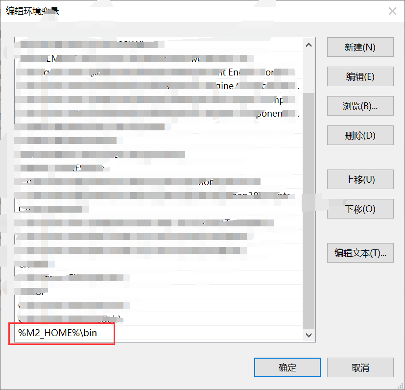
3）查看Maven版本
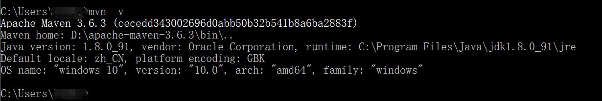
更改默认下载路径
默认在中央仓库下载，比较慢，更改一下默认的下载路径（还是在apache-maven-3.6.3\conf\settings.xml中），配置阿里云下载。
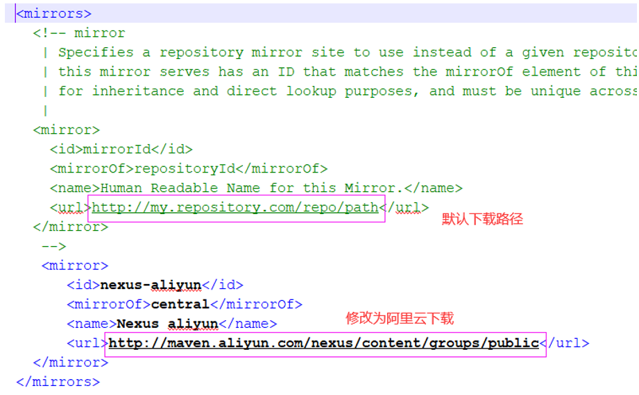
到这里，Maven的配置就完成了。
3. 配置了这么多，那么应该怎么用呢
IDEA使用Maven构建项目
首先，打开IDEA，如下图所示构建一个Java项目。
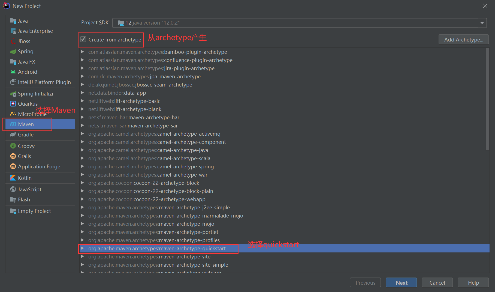
点击Next，给项目起一个名字（我就随便起了）。
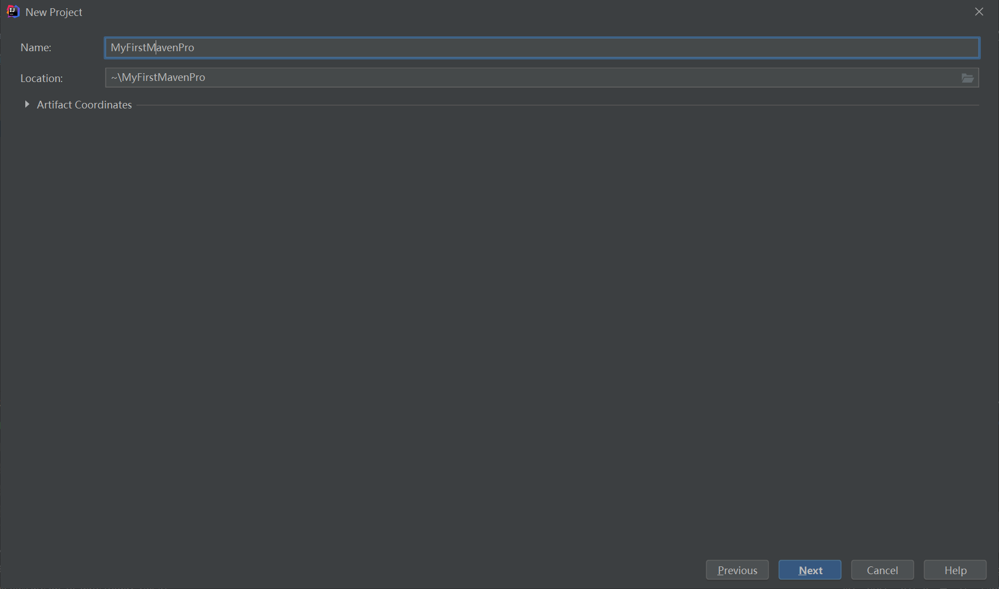
最后选择Maven的目录。
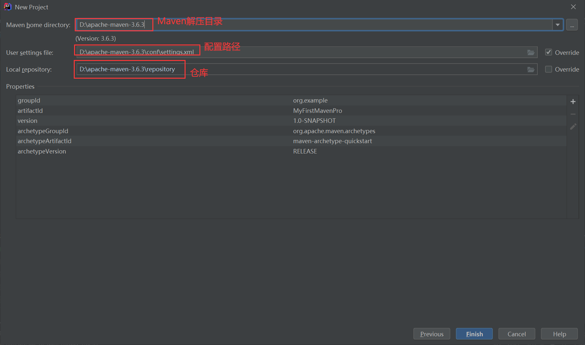
然后就可以在里面编写自己的项目了！